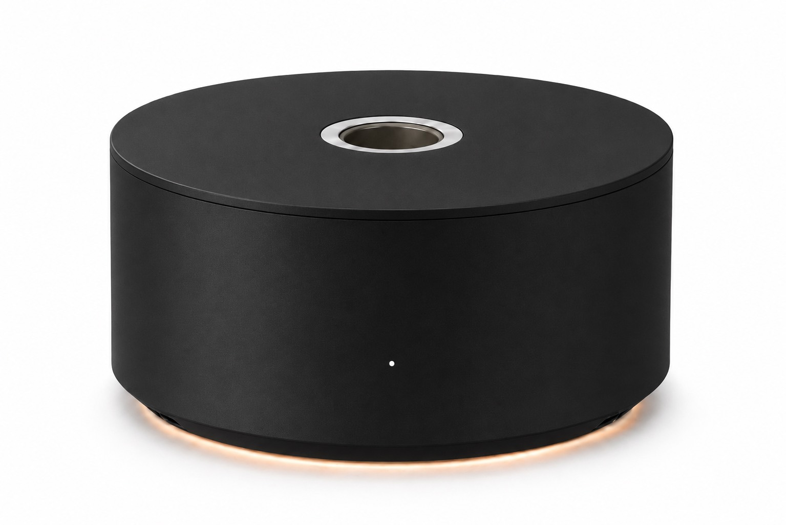
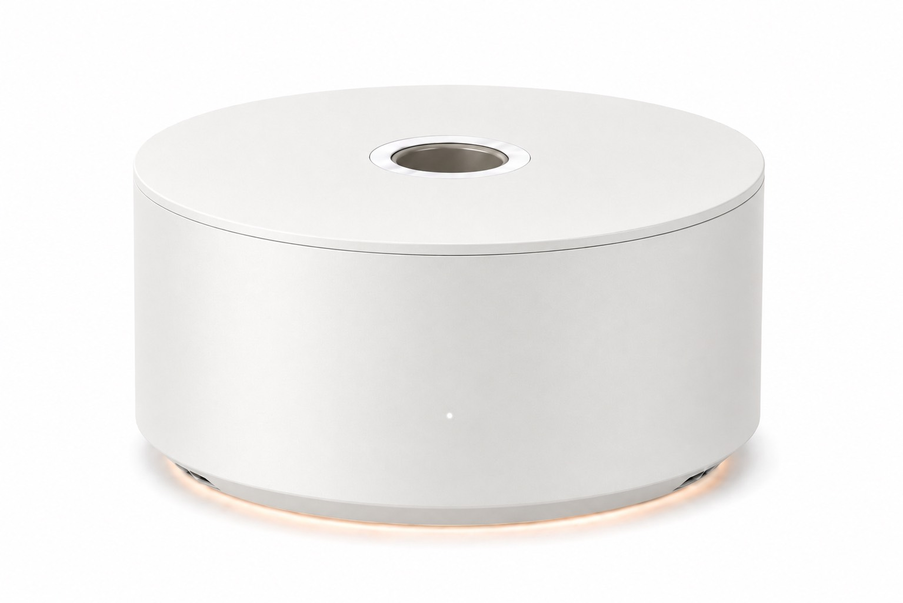

Brand popups
A new space every season, with a scent written for each campaign instead of one fixed diffuser.
Describe a scene, and SCENO renders it into the air.

Popups, exhibitions, game zones.
Experiences are already full of
sight and sound.
Images have displays. Sound has speakers. AI can now generate scent, but there is no standard device to play it. SCENO builds that output layer.
Pick a scene. The pipeline turns the sentence into a perfume recipe, then splits it across six base-scent cartridges as fan levels from 0 to 4.
Actual outputs of the SCENO research pipeline (LLM + rule engine → six-cartridge renderer), one run per scene, shown as generated.
Spaces that rebuild the room every few weeks, and change the scene every few minutes, need scent that can change without a new formula.
A new space every season, with a scent written for each campaign instead of one fixed diffuser.
Scent cues that follow the world on screen, from a forest level to a city at night.
Each room of the show gets its own scene, played from the same six cartridges.
Three steps, one path: make a scent that can actually be manufactured, prove people still read its meaning, then shrink it into a compact renderer.
An LLM chooses scene-relevant notes from a curated 80-note palette. A deterministic rule engine then enforces top / middle / base structure and formulation constraints, turning free-form language into a producible scent asset.
A compact output device that renders generated scents into physical space through a small set of blend cartridges.
Six pre-blended, pre-aged cartridges instead of one per note, so no new formulation or aging for each scene.
Any recipe is split across the six cartridges and played back as a four-step output level for each.
A consumer-scale output device, not a laboratory formulation machine.

A light neutral finish designed to sit naturally in galleries, studios, and living spaces.
Video and audio live on a timeline. Scent can too. ScentTrack places olfactory cues beside picture and sound as a time-based media layer.
The physical output device that renders generated scent into space.
A compact cartridge basis optimized for a target application or user distribution.
A media format for placing scent on the timelines of video, games, and XR.
An interface that connects text, scenes, and content events to scent output.
Bring SCENO to your popup, exhibition, film, or game. We render the scene into scent.
Request a demo